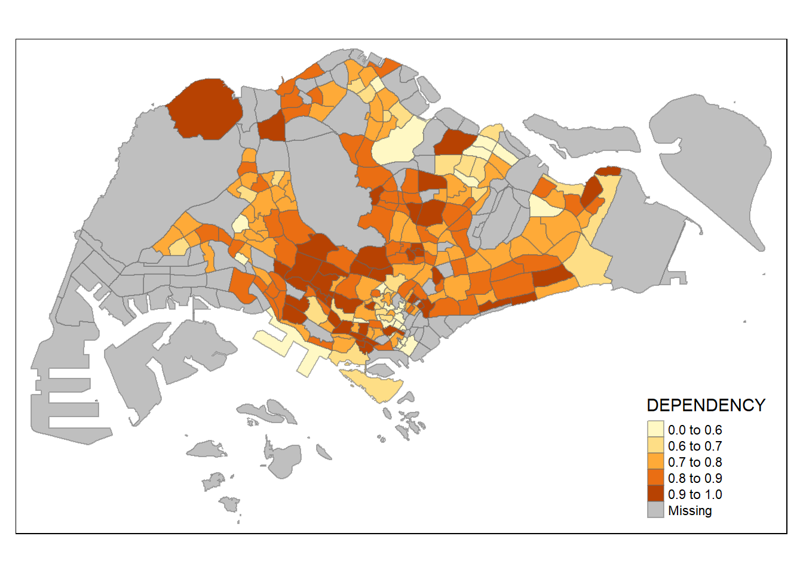
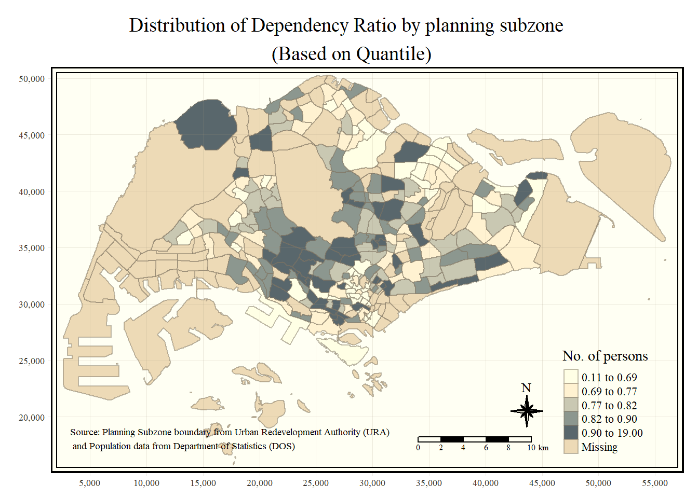
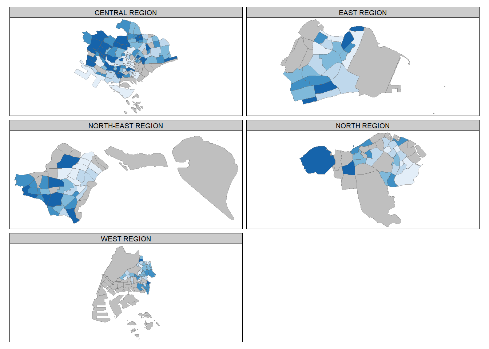

Code
pacman::p_load(sf, tmap, tidyverse)In this hands-on exercise, I will be sharing how to plot functional and truthful choropleth maps using an R package tmap.
In this hands-on exercise, the key R package use is tmap package in R. Beside tmap package, four other R packages will be used. They are:
readr for importing delimited text file,
tidyr for tidying data,
dplyr for wrangling data and
sf for handling geospatial data.
Among the four packages, readr, tidyr and dplyr are part of tidyverse package.
The code chunk below will be used to install and load these packages in RStudio.
pacman::p_load(sf, tmap, tidyverse)The datasets we are using are downloaded from the following sources:
Master Plan 2014 Subzone Boundary (Web): data.gov.sg.
Singapore Residents by Planning Area/Subzone, Age, Group, Sex and Type of Dwelling, June 2011 - 2020: Department of Statistics, Singapore.
The code chunk below uses st_read() function of sf package to import the planning subzones, which is a polygon feature data frame.
mpsz <- st_read(dsn = "data/geospatial",
layer = "MP14_SUBZONE_WEB_PL")Reading layer `MP14_SUBZONE_WEB_PL' from data source
`C:\cjh202311\ISSS608-VAA\Hands-on_Ex\Hands-on_Ex07\data\geospatial'
using driver `ESRI Shapefile'
Simple feature collection with 323 features and 15 fields
Geometry type: MULTIPOLYGON
Dimension: XY
Bounding box: xmin: 2667.538 ymin: 15748.72 xmax: 56396.44 ymax: 50256.33
Projected CRS: SVY21mpszSimple feature collection with 323 features and 15 fields
Geometry type: MULTIPOLYGON
Dimension: XY
Bounding box: xmin: 2667.538 ymin: 15748.72 xmax: 56396.44 ymax: 50256.33
Projected CRS: SVY21
First 10 features:
OBJECTID SUBZONE_NO SUBZONE_N SUBZONE_C CA_IND PLN_AREA_N
1 1 1 MARINA SOUTH MSSZ01 Y MARINA SOUTH
2 2 1 PEARL'S HILL OTSZ01 Y OUTRAM
3 3 3 BOAT QUAY SRSZ03 Y SINGAPORE RIVER
4 4 8 HENDERSON HILL BMSZ08 N BUKIT MERAH
5 5 3 REDHILL BMSZ03 N BUKIT MERAH
6 6 7 ALEXANDRA HILL BMSZ07 N BUKIT MERAH
7 7 9 BUKIT HO SWEE BMSZ09 N BUKIT MERAH
8 8 2 CLARKE QUAY SRSZ02 Y SINGAPORE RIVER
9 9 13 PASIR PANJANG 1 QTSZ13 N QUEENSTOWN
10 10 7 QUEENSWAY QTSZ07 N QUEENSTOWN
PLN_AREA_C REGION_N REGION_C INC_CRC FMEL_UPD_D X_ADDR
1 MS CENTRAL REGION CR 5ED7EB253F99252E 2014-12-05 31595.84
2 OT CENTRAL REGION CR 8C7149B9EB32EEFC 2014-12-05 28679.06
3 SR CENTRAL REGION CR C35FEFF02B13E0E5 2014-12-05 29654.96
4 BM CENTRAL REGION CR 3775D82C5DDBEFBD 2014-12-05 26782.83
5 BM CENTRAL REGION CR 85D9ABEF0A40678F 2014-12-05 26201.96
6 BM CENTRAL REGION CR 9D286521EF5E3B59 2014-12-05 25358.82
7 BM CENTRAL REGION CR 7839A8577144EFE2 2014-12-05 27680.06
8 SR CENTRAL REGION CR 48661DC0FBA09F7A 2014-12-05 29253.21
9 QT CENTRAL REGION CR 1F721290C421BFAB 2014-12-05 22077.34
10 QT CENTRAL REGION CR 3580D2AFFBEE914C 2014-12-05 24168.31
Y_ADDR SHAPE_Leng SHAPE_Area geometry
1 29220.19 5267.381 1630379.3 MULTIPOLYGON (((31495.56 30...
2 29782.05 3506.107 559816.2 MULTIPOLYGON (((29092.28 30...
3 29974.66 1740.926 160807.5 MULTIPOLYGON (((29932.33 29...
4 29933.77 3313.625 595428.9 MULTIPOLYGON (((27131.28 30...
5 30005.70 2825.594 387429.4 MULTIPOLYGON (((26451.03 30...
6 29991.38 4428.913 1030378.8 MULTIPOLYGON (((25899.7 297...
7 30230.86 3275.312 551732.0 MULTIPOLYGON (((27746.95 30...
8 30222.86 2208.619 290184.7 MULTIPOLYGON (((29351.26 29...
9 29893.78 6571.323 1084792.3 MULTIPOLYGON (((20996.49 30...
10 30104.18 3454.239 631644.3 MULTIPOLYGON (((24472.11 29...Let’s take a look at the contents of mpsz using the following code chunk:
mpszSimple feature collection with 323 features and 15 fields
Geometry type: MULTIPOLYGON
Dimension: XY
Bounding box: xmin: 2667.538 ymin: 15748.72 xmax: 56396.44 ymax: 50256.33
Projected CRS: SVY21
First 10 features:
OBJECTID SUBZONE_NO SUBZONE_N SUBZONE_C CA_IND PLN_AREA_N
1 1 1 MARINA SOUTH MSSZ01 Y MARINA SOUTH
2 2 1 PEARL'S HILL OTSZ01 Y OUTRAM
3 3 3 BOAT QUAY SRSZ03 Y SINGAPORE RIVER
4 4 8 HENDERSON HILL BMSZ08 N BUKIT MERAH
5 5 3 REDHILL BMSZ03 N BUKIT MERAH
6 6 7 ALEXANDRA HILL BMSZ07 N BUKIT MERAH
7 7 9 BUKIT HO SWEE BMSZ09 N BUKIT MERAH
8 8 2 CLARKE QUAY SRSZ02 Y SINGAPORE RIVER
9 9 13 PASIR PANJANG 1 QTSZ13 N QUEENSTOWN
10 10 7 QUEENSWAY QTSZ07 N QUEENSTOWN
PLN_AREA_C REGION_N REGION_C INC_CRC FMEL_UPD_D X_ADDR
1 MS CENTRAL REGION CR 5ED7EB253F99252E 2014-12-05 31595.84
2 OT CENTRAL REGION CR 8C7149B9EB32EEFC 2014-12-05 28679.06
3 SR CENTRAL REGION CR C35FEFF02B13E0E5 2014-12-05 29654.96
4 BM CENTRAL REGION CR 3775D82C5DDBEFBD 2014-12-05 26782.83
5 BM CENTRAL REGION CR 85D9ABEF0A40678F 2014-12-05 26201.96
6 BM CENTRAL REGION CR 9D286521EF5E3B59 2014-12-05 25358.82
7 BM CENTRAL REGION CR 7839A8577144EFE2 2014-12-05 27680.06
8 SR CENTRAL REGION CR 48661DC0FBA09F7A 2014-12-05 29253.21
9 QT CENTRAL REGION CR 1F721290C421BFAB 2014-12-05 22077.34
10 QT CENTRAL REGION CR 3580D2AFFBEE914C 2014-12-05 24168.31
Y_ADDR SHAPE_Leng SHAPE_Area geometry
1 29220.19 5267.381 1630379.3 MULTIPOLYGON (((31495.56 30...
2 29782.05 3506.107 559816.2 MULTIPOLYGON (((29092.28 30...
3 29974.66 1740.926 160807.5 MULTIPOLYGON (((29932.33 29...
4 29933.77 3313.625 595428.9 MULTIPOLYGON (((27131.28 30...
5 30005.70 2825.594 387429.4 MULTIPOLYGON (((26451.03 30...
6 29991.38 4428.913 1030378.8 MULTIPOLYGON (((25899.7 297...
7 30230.86 3275.312 551732.0 MULTIPOLYGON (((27746.95 30...
8 30222.86 2208.619 290184.7 MULTIPOLYGON (((29351.26 29...
9 29893.78 6571.323 1084792.3 MULTIPOLYGON (((20996.49 30...
10 30104.18 3454.239 631644.3 MULTIPOLYGON (((24472.11 29...We will use read_csv()
popdata <- read_csv("data/aspatial/respopagesextod2011to2020.csv",show_col_types = FALSE)Let’s take a look at the data imported in:
list(popdata)[[1]]
# A tibble: 984,656 × 7
PA SZ AG Sex TOD Pop Time
<chr> <chr> <chr> <chr> <chr> <dbl> <dbl>
1 Ang Mo Kio Ang Mo Kio Town Centre 0_to_4 Males HDB 1- and 2-Ro… 0 2011
2 Ang Mo Kio Ang Mo Kio Town Centre 0_to_4 Males HDB 3-Room Flats 10 2011
3 Ang Mo Kio Ang Mo Kio Town Centre 0_to_4 Males HDB 4-Room Flats 30 2011
4 Ang Mo Kio Ang Mo Kio Town Centre 0_to_4 Males HDB 5-Room and … 50 2011
5 Ang Mo Kio Ang Mo Kio Town Centre 0_to_4 Males HUDC Flats (exc… 0 2011
6 Ang Mo Kio Ang Mo Kio Town Centre 0_to_4 Males Landed Properti… 0 2011
7 Ang Mo Kio Ang Mo Kio Town Centre 0_to_4 Males Condominiums an… 40 2011
8 Ang Mo Kio Ang Mo Kio Town Centre 0_to_4 Males Others 0 2011
9 Ang Mo Kio Ang Mo Kio Town Centre 0_to_4 Females HDB 1- and 2-Ro… 0 2011
10 Ang Mo Kio Ang Mo Kio Town Centre 0_to_4 Females HDB 3-Room Flats 10 2011
# ℹ 984,646 more rowsBefore a thematic map can be prepared, we need to prepare a data table just for year 2020 values. The data table should include the following variables:
PA
SZ
YOUNG: age group 0 to 4 until age group 20 to 24
ECONOMY ACTIVE: age group 20 to 29 up till age group 60 to 64
AGED: age group 65 and above
TOTAL: all age group
DEPENDENCY: the ratio between YOUNG and AGED against ECONOMY ACTIVE group
We will be using the following functions from tidyverse package:
pivot_wider() of tidyr package, and
mutate(), filter(), group_by() and select() of dplyr package
popdata2020 <- popdata %>%
filter(Time == 2020) %>%
group_by(PA, SZ, AG) %>%
summarise(POP = sum(Pop), .groups = "drop")%>%
ungroup()%>%
pivot_wider(names_from=AG,
values_from=POP) %>%
mutate(YOUNG = rowSums(.[3:6])
+rowSums(.[12])) %>%
mutate(`ECONOMY ACTIVE` = rowSums(.[7:11])+
rowSums(.[13:15]))%>%
mutate(`AGED`=rowSums(.[16:21])) %>%
mutate(`TOTAL`=rowSums(.[3:21])) %>%
mutate(`DEPENDENCY` = (`YOUNG` + `AGED`)
/`ECONOMY ACTIVE`) %>%
select(`PA`, `SZ`, `YOUNG`,
`ECONOMY ACTIVE`, `AGED`,
`TOTAL`, `DEPENDENCY`)We will convert the values in PA and SZ files to uppercase because the values of PA and SZ fields are made up of upper and lower case while the SUBZONE_N and PLN_AREA_N are in uppercase.
popdata2020 <- popdata2020 %>%
mutate_at(.vars = vars(PA, SZ),
.funs = list(toupper)) %>%
filter(`ECONOMY ACTIVE` > 0)
mpsz_pop2020 <- left_join(mpsz, popdata2020,
by = c("SUBZONE_N" = "SZ"))
write_rds(mpsz_pop2020, "data/mpszpop2020.rds")Then, we will use left_join() of dplyr to join the geographical data and trribute table using planning subzone name (SUBZON_N and SZ) as the common identifiers.
mpsz_pop2020 <- left_join(mpsz, popdata2020,
by = c("SUBZONE_N" = "SZ"))write_rds(mpsz_pop2020, "data/mpszpop2020.rds")To prepare thematic map using tmap, we can:
Plot a thematic map quickly using qtm().
Plot highly customisable thematic map by using tmap elements.
The code chunk below draws a cartographic standard choropleth map.
tmap_mode("plot")
qtm(mpsz_pop2020, fill = "DEPENDENCY")
In the following sub-section, we will share with you tmap functions that used to plot these elements.
The basic building block of tmap is tm_shape() followed by one or more layer elemments such as tm_fill() and tm_polygons().
In the code chunk below, tm_shape() is used to define the input data (i.e mpsz_pop2020) and tm_polygons() is used to draw the planning subzone polygons.
tm_shape(mpsz_pop2020) +
tm_polygons()
To draw a choropleth map showing the geographical distribution of a selected variable by planning subzone, we can assign the target variable (e.g. Dependency) to tm_polygons().
tm_shape(mpsz_pop2020) +
tm_polygons("DEPENDENCY")
tm_polygons is a wraper of tm_fill() and tm_border(). tm_fill() shades the polygons using the default colour scheme and tm_borders() adds the borders of the shapefile onto the choropleth map.
tm_shape(mpsz_pop2020)+
tm_fill("DEPENDENCY")
tm_shape(mpsz_pop2020) +
tm_fill("DEPENDENCY") +
tm_borders(lw = 0.1, alpha = 1)
To draw a high quality cartographic choropleth map as shown in the figure below, tmap’s drawing elements should be used.
tm_shape(mpsz_pop2020)+
tm_fill("DEPENDENCY",
style = "quantile",
palette = "Blues",
title = "Dependency ratio") +
tm_layout(main.title = "Distribution of Dependency Ratio by planning subzone",
main.title.position = "center",
main.title.size = 1.2,
legend.height = 0.45,
legend.width = 0.35,
frame = TRUE) +
tm_borders(alpha = 0.5) +
tm_compass(type="8star", size = 2) +
tm_scale_bar() +
tm_grid(alpha =0.2) +
tm_credits("Source: Planning Sub-zone boundary from Urban Redevelopment Authorithy (URA)\n and Population data from Department of Statistics DOS",
position = c("left", "bottom"))
Most choropleth maps use some methods of data classification in order to take a large number of observations and group them into data ranges or classes.
tmap provides a total ten data classification methods, namely: fixed, sd, equal, pretty (default), quantile, kmeans, hclust, bclust, fisher, and jenks.
To define a data classification method, the style argument of tm_fill() or tm_polygons() will be used.
The code chunk below shows a jenks data classification that used 5 classes:
tm_shape(mpsz_pop2020) +
tm_fill("DEPENDENCY",
n = 5,
style = "jenks") +
tm_borders(alpha = 0.5)
The code chunk below uses the equal data classification method.
tm_shape(mpsz_pop2020) +
tm_fill("DEPENDENCY",
n = 5,
style = "equal") +
tm_borders(alpha = 0.5)
We can also compute our own category breaks.
First, we will compute and display the descriptive statistics of DEPENDENCY field.
summary(mpsz_pop2020$DEPENDENCY) Min. 1st Qu. Median Mean 3rd Qu. Max. NA's
0.1111 0.7147 0.7866 0.8585 0.8763 19.0000 92 Using the above results, we set the break points at 0.60, 0.70, 0.80, 0.90, and 0 will be the minimum while 1 will be the maximum.
We plot the choropleth map with our customised breaks using the following code chunk:
tm_shape(mpsz_pop2020)+
tm_fill("DEPENDENCY",
breaks = c(0, 0.60, 0.70, 0.80, 0.90, 1.00)) +
tm_borders(alpha = 0.5)
tmap supports colour ramps either defined by the user or a set of predefined colour ramps from the RColorBrewer package.
tm_shape(mpsz_pop2020)+
tm_fill("DEPENDENCY",
n = 6,
style = "quantile",
palette = "Blues") +
tm_borders(alpha = 0.5)
To revese the colour shading, add a “-” prefix under “palette”.
tm_shape(mpsz_pop2020)+
tm_fill("DEPENDENCY",
style = "quantile",
palette = "-Greens") +
tm_borders(alpha = 0.5)
In tmap, several legend options are available to change the placement, format and appearance of the legend.
tm_shape(mpsz_pop2020)+
tm_fill("DEPENDENCY",
style = "jenks",
palette = "Blues",
legend.hist = TRUE,
legend.is.portrait = TRUE,
legend.hist.z = 0.1) +
tm_layout(main.title = "Distribution of Dependency Ratio by planning subzone \n(Jenks classification)",
main.title.position = "center",
main.title.size = 1,
legend.height = 0.45,
legend.width = 0.35,
legend.outside = FALSE,
legend.position = c("right", "bottom"),
frame = FALSE) +
tm_borders(alpha = 0.5)
tmap allows a wide variety of layout settings to be changed. They can be called by using tmap_style().
The code chunk below shows the classic style is used.
tm_shape(mpsz_pop2020)+
tm_fill("DEPENDENCY",
style = "quantile",
palette = "-Greens") +
tm_borders(alpha = 0.5) +
tmap_style("classic")
tmap also also provides arguments to draw other map furniture such as compass, scale bar and grid lines.
In the code chunk below, tm_compass(), tm_scale_bar() and tm_grid() are used to add compass, scale bar and grid lines onto the choropleth map.
tm_shape(mpsz_pop2020) +
tm_fill("DEPENDENCY", style = "quantile",
palette = "Blues",
title = "No. of persons") +
tm_layout(main.title = "Distribution of Dependency Ratio by planning subzone \n (Based on Quantile)",
main.title.position = "center",
main.title.size = 1.2,
legend.height = 0.45,
legend.width = 0.35,
frame = TRUE) +
tm_borders(alpha = 0.5) +
tm_compass(type = "8star", size = 2) +
tm_scale_bar(width = 0.15) +
tm_grid(lwd = 0.1, alpha = 0.2) +
tm_credits("Source: Planning Subzone boundary from Urban Redevelopment Authority (URA) \n and Population data from Department of Statistics (DOS)",
position = c("left", "bottom"))
To return to the previous map style, use the following code chunk:
tmap_style("white")In tmap, small multiple maps (also known as facet maps) can be plotted in three ways:
by assigning multiple values to at least one of the asthetic arguments,
by defining a group-by variable in tm_facets(), and
by creating multiple stand-alone maps with tmap_arrange().
tm_shape(mpsz_pop2020)+
tm_fill(c("YOUNG", "AGED"),
style = "equal",
palette = "Blues") +
tm_layout(legend.position = c("right", "bottom")) +
tm_borders(alpha = 0.5) +
tmap_style("white")
tm_shape(mpsz_pop2020)+
tm_polygons(c("DEPENDENCY","AGED"),
style = c("equal", "quantile"),
palette = list("Blues","Greens")) +
tm_layout(legend.position = c("right", "bottom"))
tm_shape(mpsz_pop2020) +
tm_fill("DEPENDENCY",
style = "quantile",
palette = "Blues",
thres.poly = 0) +
tm_facets(by="REGION_N",
free.coords=TRUE,
drop.shapes=TRUE) +
tm_layout(legend.show = FALSE,
title.position = c("center", "center"),
title.size = 20) +
tm_borders(alpha = 0.5)
youngmap <- tm_shape(mpsz_pop2020)+
tm_polygons("YOUNG",
style = "quantile",
palette = "Blues")
agedmap <- tm_shape(mpsz_pop2020)+
tm_polygons("AGED",
style = "quantile",
palette = "Blues")
tmap_arrange(youngmap, agedmap, asp=1, ncol=2)
Instead of creating small multiple choropleth map, you can also use selection funtion to map spatial objects meeting the selection criterion.
tm_shape(mpsz_pop2020[mpsz_pop2020$REGION_N=="CENTRAL REGION", ])+
tm_fill("DEPENDENCY",
style = "quantile",
palette = "Blues",
legend.hist = TRUE,
legend.is.portrait = TRUE,
legend.hist.z = 0.1) +
tm_layout(legend.outside = TRUE,
legend.height = 0.45,
legend.width = 5.0,
legend.position = c("right", "bottom"),
frame = FALSE) +
tm_borders(alpha = 0.5)